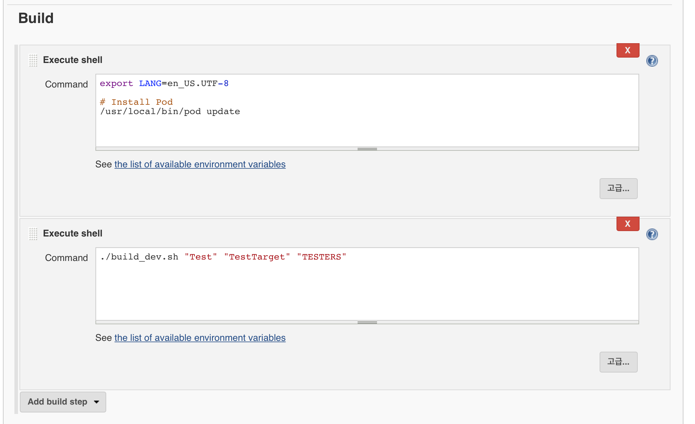

iOS command build script
스크립트를 통해 Xcode 프로젝트를 빌드하는 방법에 대해서 설명 드리려고 합니다.
구성
Xcode상에서 작성된 코드를 가끔 커맨드를 통해 빌드해야 할 경우가 생깁니다.
저와 같은 경우는 Jenkins를 통해 자동배포 구성 시 Jenkins에서 자동으로 설정해주는 셋팅값 대신 스크립트로 제가 원하는 환경을 만들고 빌드하기 위해 주로 사용합니다.
그 이유는 Jenkins빌드셋팅이 생각보다 쉽지 않을 뿐더러 Xcode버전업 등으로 재 설정이 필요할 경우 일정기간 제대로 동작하지 않는 문제가 발생하기 때문입니다.
사실 Xcode7에서 마이너버전 업데이트 이후에 제대로 동작하지 않아 알아보던 중 구성하게 됐습니다.
아래 스크립트 구성 방식은 아래와 같습니다.
- Xcode빌드
- ipa파일 추출
- Fabric을 통해 해당 ipa배포
3.1. 배포 시 커밋로그를 기반으로 릴리즈 노트 생성
0000000 < 이런식으로 돼 있는 곳은 해당 서버에 맞는 키를 발급받아 넣어주시면 됩니다.
커멘드 창 내 실행
커멘드 창에서 실행시는1$ ./build.sh "Test" "TestTarget" "Testers"
이렇게 세개의 파라미터로 동작하고, 각 파라미터는
- 첫번째 파라미터 : workspace 이름
- 두번째 파라미터 : 빌드하려는 타켓 이름
- 세번째 파라미터 : fabric 배포 시 배포 그룹 이름
입니다.
fabric 배포가 필요 없으시다면 스크립트에서 해당 설정 부분을 제거하시면 될 듯 합니다.
Jekins내 설정
Jenkins내의 프로젝트 설정으로 가셔서
아래쪽에 보시면 Build항목이 있습니다.
Add build step > Execute shell을 클릭하여 추가한 후
해당 스크립트를 작성해주시면 됩니다.
